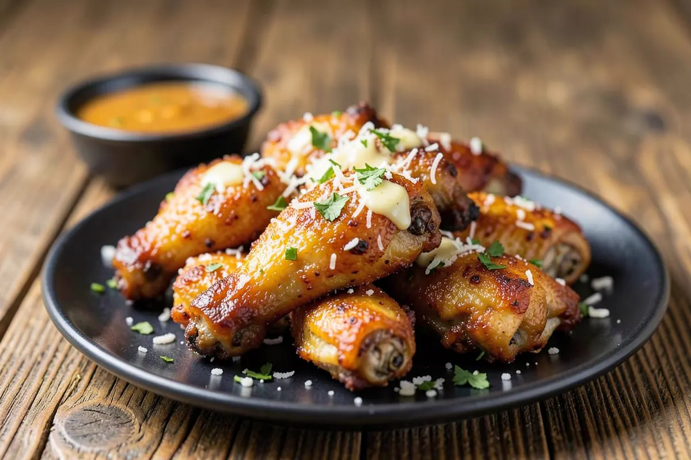

Garlic Parmesan Crispy Wings

Crispy wings in the oven come down to one unlikely ingredient: a little baking powder. Tossed with the wings before baking, it raises the pH of the skin and helps it crisp and brown in a way that plain salt cannot.
These wings bake on a rack at 425 F for about forty-five minutes, then get tossed in garlic butter and parmesan. Two pounds of wings serve four as a snack or two as a meal with a salad.
Ingredients
- 2 lbs chicken wings, split into flats and drums
- 1 tbsp baking powder (the secret to crispiness!)
- 1 tsp salt
- 1/2 cup unsalted butter, melted
- 4 cloves garlic, finely minced
- 1/2 cup grated Parmesan cheese
- 1/2 tsp cracked black pepper
- 1 tbsp fresh parsley, finely chopped
Instructions
- Preheat oven to 425°F (220°C). Line a large baking sheet with foil and place a metal wire rack on top.
- Pat the chicken wings completely dry with paper towels. In a large bowl, toss the wings thoroughly with the baking powder and salt until evenly coated.
- Arrange wings on the wire rack in a single layer. Bake for 40-45 minutes, turning them halfway through, until exceptionally crispy and golden brown.
- While the wings bake, whisk together the melted butter, minced garlic, Parmesan cheese, pepper, and fresh parsley in a large bowl.
- Toss the piping hot cooked wings directly into the garlic parmesan butter sauce until fully glazed. Serve immediately!
Why this recipe works
Baking on a wire rack lets hot air circulate underneath, so the skin renders and crisps instead of sitting in its own fat. The garlic butter goes on after baking, not before, because garlic burns at high heat and turns acrid.
Tips for success
- Dry the wings thoroughly with paper towels before tossing them with baking powder and salt.
- Use aluminum-free baking powder and toss just enough to coat; too much leaves a chalky taste.
- Melt the butter and garlic together over low heat, then toss the hot wings in it immediately before serving.
Substitutions that work
- Drumsticks work with the same method, though they need ten extra minutes in the oven.
- For a spicier version, add a teaspoon of cayenne to the baking powder mixture.
- Parmesan can be replaced with pecorino for a sharper, saltier finish.
Storage and make-ahead
Refrigerate leftovers for three days. Reheat on a rack at 400 F for ten minutes to bring the skin back, rather than in the microwave, which steams the coating. Uncooked seasoned wings can be frozen for two months.
Serving suggestions
Serve with celery, carrot sticks and a blue cheese dip, or with a bowl of Greek salad to cut the richness. They disappear fastest straight from the oven.
Setting up the rack and pan
A wire cooling rack set inside a foil-lined baking sheet is the difference between crisp wings and greasy ones. The foil catches the rendered fat, and the rack keeps the wings out of it. Leave an inch between the pieces so the hot air can move around them, and put the tray in the middle of the oven rather than near the top, where the garlic butter will later catch. If your rack is too small for two pounds of wings, use two trays and rotate them halfway through. Wings at room temperature cook more evenly than ones straight from the refrigerator, so take them out twenty minutes ahead.
Frequently asked questions
Does baking powder really make wings crispy?
Yes. A small amount changes the surface pH, which helps the skin brown and crisp faster. Use aluminum-free baking powder and only about a tablespoon for two pounds of wings.
Can I fry these wings instead?
You can, but omit the baking powder and double-fry at 350 F for the best texture. The oven method is simpler and less messy.
Why did my wings come out soggy?
They were probably crowded on the pan or not dried properly. Use a rack, leave space between the wings and pat them dry before seasoning.